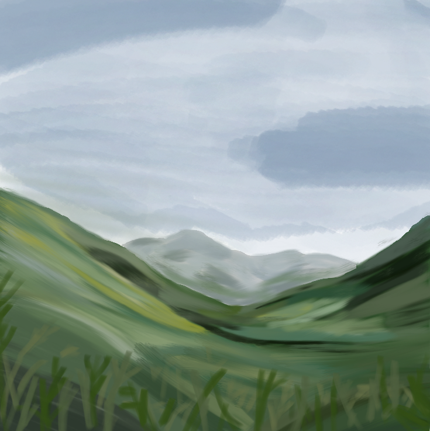
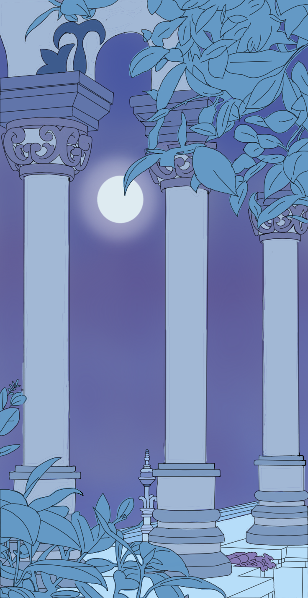
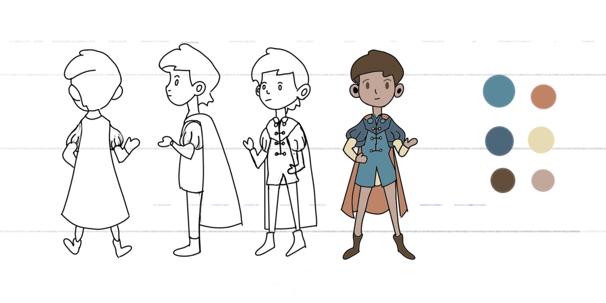
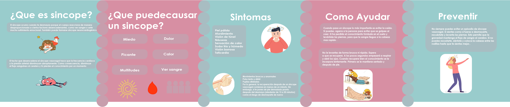

Land Scape
Presentación de Paisaje Basado en Referencia Fotográfica: Arte Conceptual

Reproductor De Musica
Diseño de una interfaz de usuario para un reproductor de música, desarrollada siguiendo el estilo corporativo de MEPHI.

Portada de Revista
Diseño de una portada de revista utilizando por primera vez ilustrador en la clase de computacion aplicada al diseño.

Background
Fondo de la historia creada en Arte Conceptual

Turn Around
Creacion de personaje en sus respectivos angulos hecho en la clase de Arte Conceptual.

Infografia
Infografia informativa en modo carusel realizada en la clase de Diseño visual de la informacion